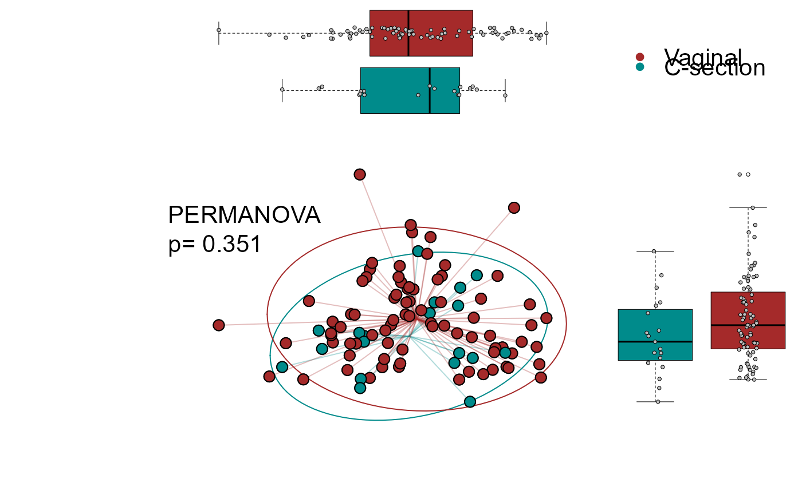
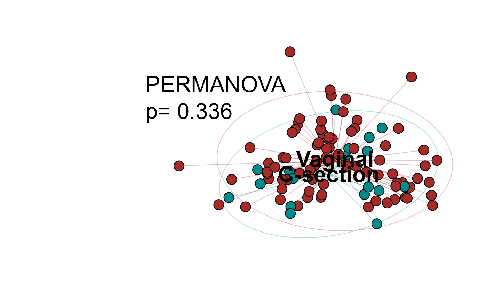
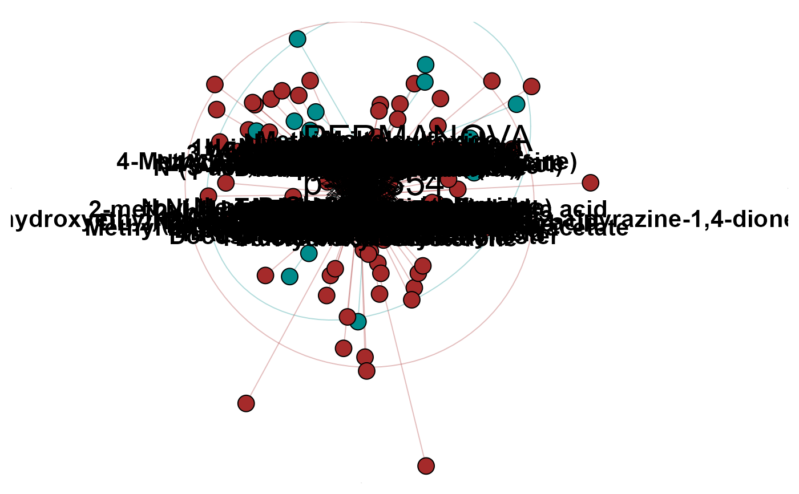

plot_reduction.Rdplot_reduction() stands in place of beta_dispersion for non phyloseq objects.
The purpose is to allow users to plot main reduction algorithm on data.frames or matrices.
plot_reduction(
mat,
clinical_data,
axis_x = 1,
axis_y = 2,
nf = 5,
method = "PCA",
type = "boxplot",
group = NULL,
dist = "euclidean",
stat = "none",
color_vector = c("cyan4", "brown", "deepskyblue", "black", "red"),
legend_title = NULL,
lwd = 1,
conf = 0.9,
cex = 2,
font = 2,
pch = 20,
draw = "lines",
ylimits = "auto",
xlimits = "auto",
text = F,
ncol = 1,
x.intersp = 1,
y.intersp = 0.5,
where = "topleft",
inset = 0.2,
pca = T,
stat.cex = 2,
...
)A matrix with samples in rows
An integer specifying the columns that are discrete values.
Number of the component for X axis
Number of the component for Y axis
Number of component to calculate
Method of reduction to use. Currently available : "PCA", "CA", "DCA", "tsne"
Chose the type of plot you want, choices are : "boxplot", "pure" or "arrows". Default="boxplot".
The group to colorise and put ellipse
The distance method to be used for PCoA, NMDS and PERMANOVA analysis, distance are directly given to vegdist. Default = "euclidean".
Either permanova adonis2 with default parameter or envfit function.
Color vector
Legend title
Line width
Confidence interval. Default = 0.9.
Size of the text
Type of font. Default = 2 (bold).
Shape
Categorical, draw ellipses as lines or as polygons
@param xlimits Limits for the axis
Number of columns for the legend. Default = 1
Adjust the legend: character interspacing factor for horizontal (x) spacing between symbol and legend text. @param y.intersp Adjust the legend: vertical (y) distances (in lines of text shared above/below each legend entry). A vector with one element for each row of the legend can be used.
Position for the permanova value. Default = "topleft"
Adjust the legend: inset distance(s) from the margins as a fraction of the plot region when legend is placed by keyword.
Logical. For tsne only. Does the tsne need to be run on a PCA first ?
Size of the stats text.
data(metabolomic)
# Reduction with boxplot on the sides
plot_reduction(mat= metabolomic, clinical_data = 1:4, axis_x=1, axis_y=2, nf= 5,
method= "PCA", type= "boxplot", group="birth_type", stat="permanova")

# Reduction without boxplots
plot_reduction(mat= metabolomic, clinical_data = 1:4, axis_x=1, axis_y=2, nf= 5,
method= "PCA", type= "pure", group="birth_type", stat="permanova")

# Reduction with arrows for the vectors loading
plot_reduction(mat= metabolomic, clinical_data = 1:4, axis_x=1, axis_y=2, nf= 5,
method= "PCA", type= "arrows", group="birth_type", stat="permanova")

# Test permanova or envift
plot_reduction(mat= metabolomic, clinical_data = 1:4, axis_x=1, axis_y=2, nf= 5,
method= "PCA", type= "arrows", group="birth_type", stat="envfit")
#> Error in eval(X, environment(formula), enclos = .GlobalEnv): object 'p' not found